Node.js is an asynchronous event driven server-side Javascript runtime environment. It was developed by Ryan Dahl in 2009. Node was designed for building scalable network dependent applications. A rich library of JavaScript modules are also provided for this platform that simplifies the development of web applications.
Features
Asynchronus
Node.js is asynchronous such that when multiple requests come in it handles them concurrently. Moreover, when a request has been made, Node will move on to the next request even when the previous has not been finished yet.
Event Driven
Node is event driven because as soon as its server starts running, it initiates all variables, declares functions and waits for an event to occur. Node.js’ Event Loop listens for events and triggers a callback function.
Single Threaded but asynchronous
Where to Use Node.js
I/O bound applications
Data Intensive Real-Time Applications
JSON APIs based applications
Data Streaming applications
Single Page Applications
Environment Setup
If you are willing to set up your development environment for Node.js then you need a text editor, to develop your own Node.js applications, and the Node.js binary installable.
The Node.js installable can be downloaded from the Official website of Node.js at https://nodejs.org/en/
Open and run the msi file
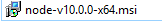
Run the msi files and it will automatically include the Node.js to your machine’s PATH environment variable.
Components of a Node.js Application
An application developed with Node.js consists of 3 important components:
Modules – modules are imported for use in your source code for easier and faster coding. Modules are loaded by using the require directive.
Server – the server will be the one listening to the requests that clients will make.
Request and Response mechanism – when the server listens to a client’s request it generates a response as defined by the programmer in reply to the request.
Sample Code
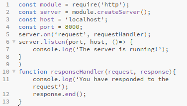
To start the server, go to the directory of your file then run your terminal there. Issue the command :
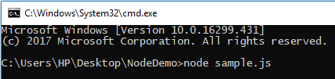
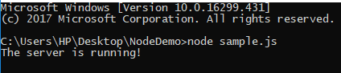
Making a Request to the Server
In any browser, open localhost:8000 and observe following result:
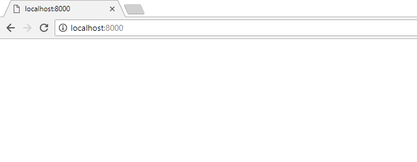
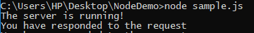
Node.js – NPM
The Node Package Manager (NPM) provides 2 main functionalities:
Node.js packages and modules available via online repositories
Utility to install packages using a machines command line, also it can do version management and Node.js packages’ dependency management.
Installing a Module using NPM
To install a module in a command line interface issue the command
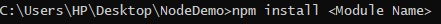
Example of a web framework module is the express module.
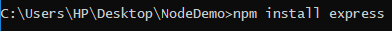
After installation you can already use the module by including this to your .js file:
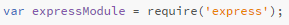
Uninstalling a module
To uninstall a Module just issue the following command:
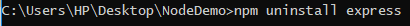
To verify if you have successfully uninstalled a module you can issue the command:
Node.js Callback Concept
A callback is a function equivalent, only synchronous. When a task is completed, a callback function is called. Node.js makes extensive use of callback functions. All Node.js APIs support callbacks.
For example, a function that is programmed to read the contents of a file and return the execution control to the environment immediately in order for the proceeding instructions can be executed. So no code blocking will happen, once the file I/O completes, the callback function is called while it is being passed. This is why Node.js is highly scalable, it can process multiple requests without waiting for a function to return the results.
Blocking Code Example
To simulate the situation above, first, create a text file named file.txt:
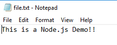
Then create a js file named demo.js:
Then run the js file that you have created and verify the output:
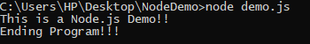
Non-Blocking Code Example
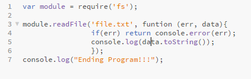
And run the js file and verify the output:
Node.js-Event Loop
Node.js is a single-threaded application, however events and callbacks also make Node.js support concurrency.
Event-driven Programming
When a user does something like for example, click a button in a webpage, an event is triggered. These events have functions that when triggered, executes something.
There is a main loop that listens for events and trigger a callback function for the event that was triggered. When an asynchronous function returns its results, a callback function is called. There are events used to bind events and event-listener. They are available through events module and EventEmiiter class.
Syntax in binding an event handler with an event:
Firing an event programmatically:
EXAMPLE
//main.js
Node.js-EventEmitter
A module that helps in incorporating Event-Driven Programming in projects. The events module contains the EventEmitter class.
There is an ‘error’ event that is triggered when an EventEmitter faces an error. A ‘newListener’ event is triggered when a new listener is added. Lastly, a removeListener event is fired when a listener is removed.
Methods
addListener(event, listener)
on(event, listener)
once(event, listener)
removeListener(event, listener)
removeAllListeners([event])
setMaxListeners(n)
listeners(event)
emit(event, [arg1], [arg2], [...])
Class methods
listenerCount(emitter, event)
Events
newListener
event – the name of the event
listener - the event handler function
removeListener
event - the name of the event
listener - the event handler function
EXAMPLE
Node.js – File System
This allows the user to work with the computer’s file system. To implement a file system, use the require() method.
Example:
var filesystem = require(‘filesystem’);
It is commonly use for Reading files, Creating files, Updating files, Deleting files and Renaming files.